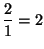
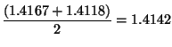

f(x) = 2x - 5
g(x) = 3x - 2
- What is the function determined by composition, (f o g)(x ) = ?
- Remember the effect of applying (f o g)
to x is the same as the result
computed by f ( g(x)
) )
- What is (g o f) (x ) = ?
- What is the value of (f o g) (2 ) = ?
- What is the value of (g o f
) (2 ) = ?
| Guess | Quotient | Average |
| 1 |  |
 |
| 1.5 |
|
 |
| 1.4167 |
|
 |
| 1.4142 | ... | ... |
Continuing this process, we obtain better and better
approximations to
the square root. "(From Structure
and
Interpreation of Computer Programs by Abelson and Sussman).
Using a spreadsheet or calculator apply Newton's method to find
the square of 144 using an inital guess of 1. How do
you know when to stop? How many steps did it take you? (Using
OpenOffice spreadsheet it took me 7 steps)